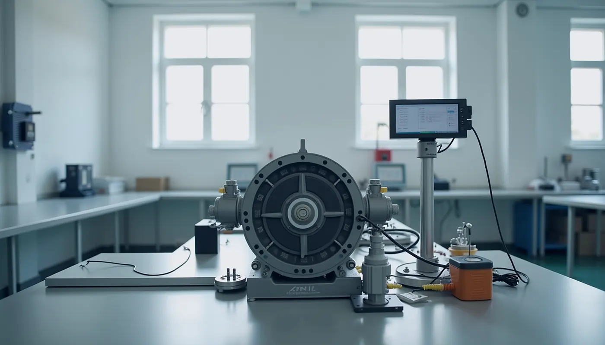

Научноизследователска дейност
Научната дейност в катедрата обхваща синтеза и анализа на механизми, роботиката, динамиката на машините и предавките.

Основни направления
| № | Направление | Съдържание |
|---|---|---|
| 1 | Синтез на механизми | Проектиране на лостови, гърбични и зъбни механизми, чиито точки следват зададени траектории. |
| 2 | Роботика и мехатроника | Манипулатори, паралелни структури и интелигентни задвижвания. |
| 3 | Динамика на машините | Уравновесяване, вибрации и преходни режими. |
| 4 | Предавки и редуктори | Геометрия, якост и ефективност на зъбни, планетни и циклоидни предавки. |
Форми на реализация
- публикации у нас и в чужбина;
- участие в международни проекти;
- договори с фирми;
- патенти и изобретения;
- разработки, внедрени в промишлеността с икономически и социален ефект;
- консултации на фирми.
Списъците с проекти и публикации се поддържат от изследователите и университета. tu-sofia.bg ↗